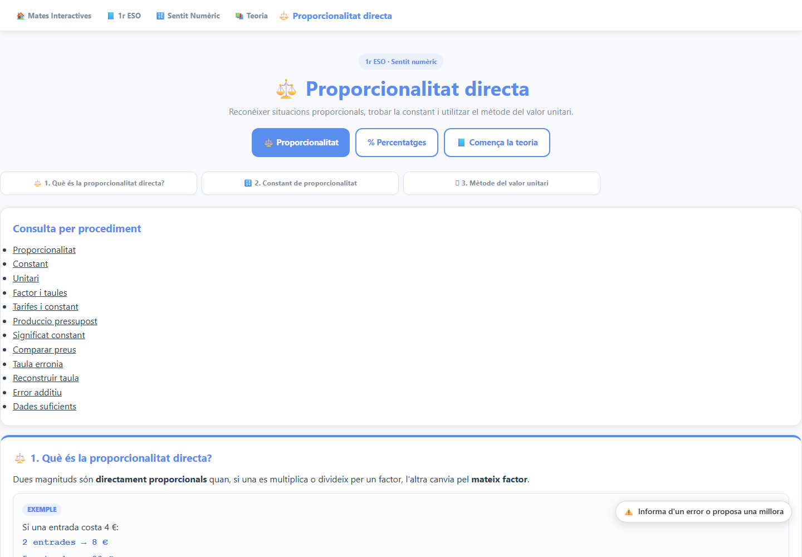
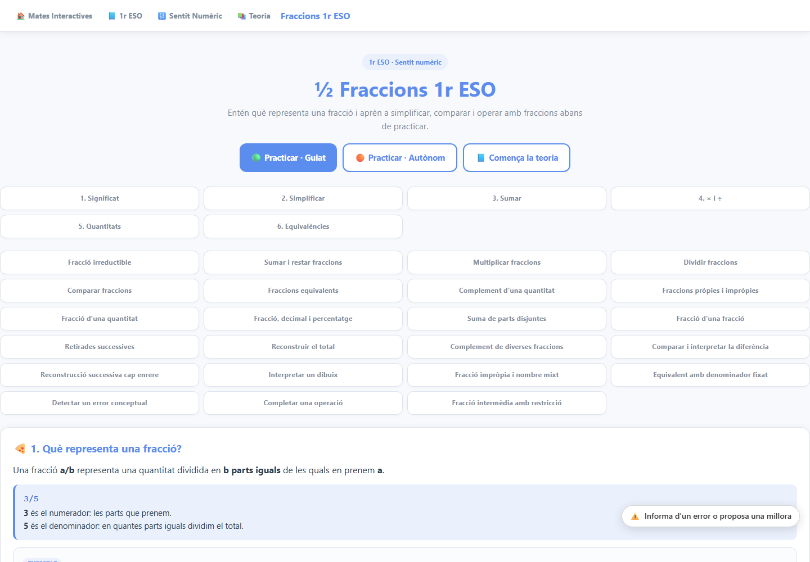
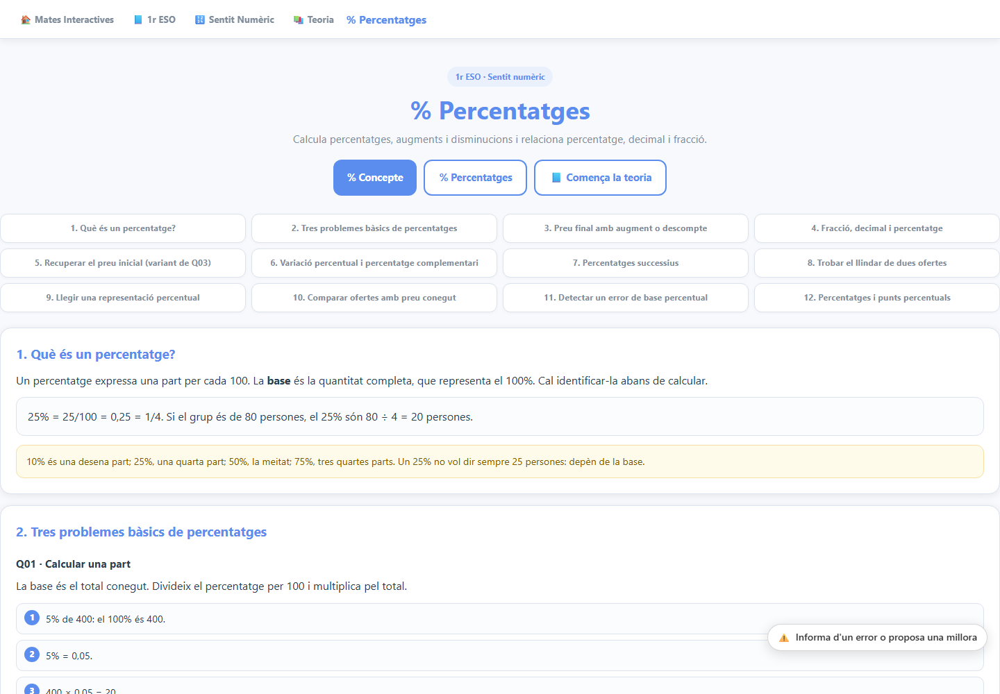
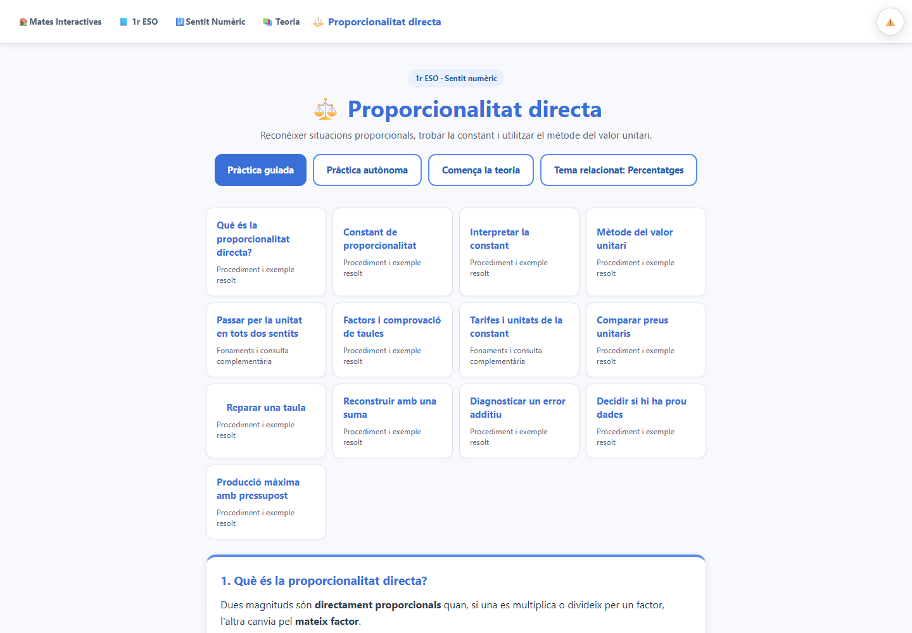
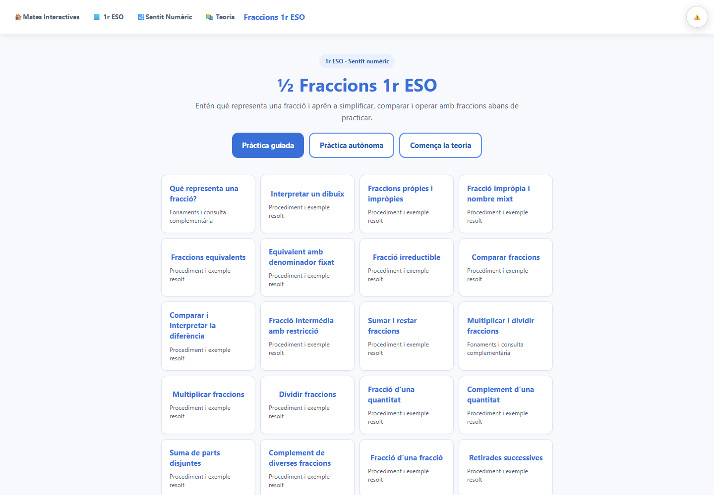
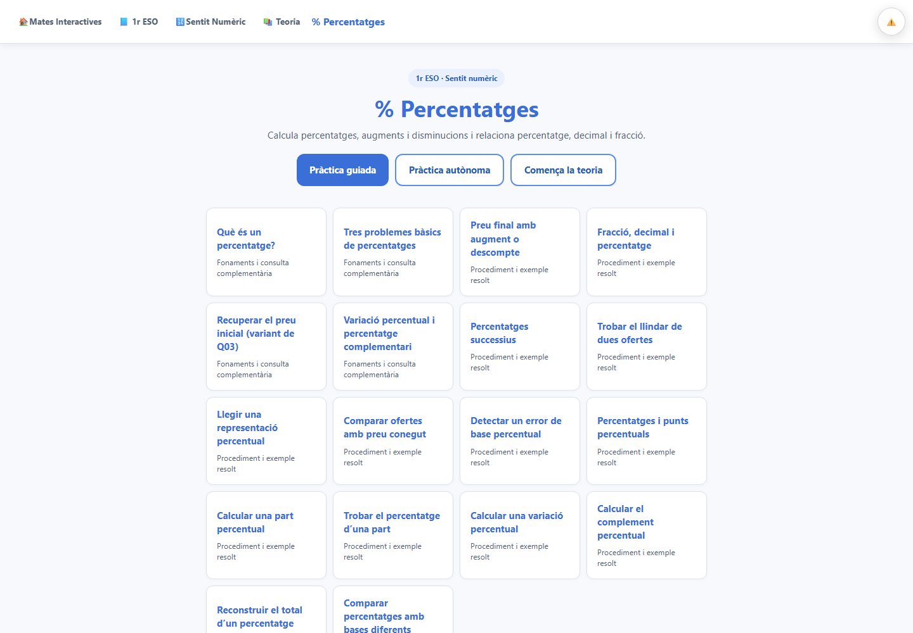

Proporcionalitat directa · 768px Fraccions · 768px Percentatges · 768px Proporcionalitat directa · 390px Fraccions · 390px Percentatges · 390px
Exemple de pressupost al mòbil · Matriu completa · Informe